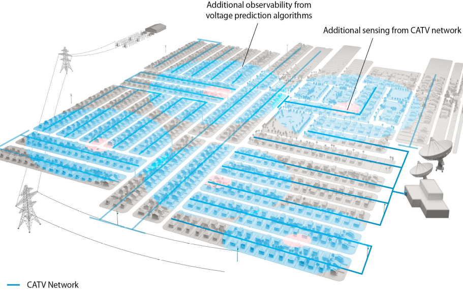
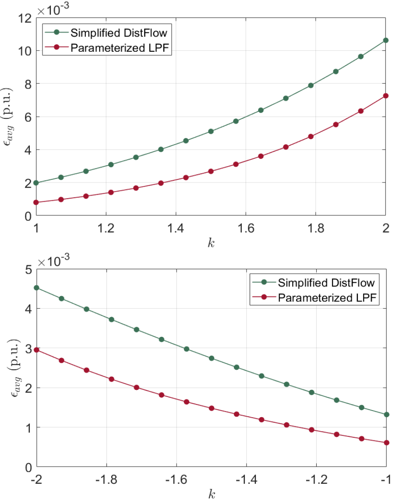

Research
Data-Driven Estimation for Low-Observable Distribution Systems
Distribution systems are seen as a keystone of the modernization of electric power systems, as they integrate renewable sources and enable new services for consumers with distributed energy resources (DERs), such as solar photovoltaics and electric vehicles. Despite their importance, distribution systems lack observability due to scarce metering devices and insufficient communications. They are therefore characterized by very limited decision-making and control, which is particularly important in the growing presence of DERs. Although several recent works have studied learning (e.g., supervised learning) and matrix completion methods applicable to low-observability conditions often present on distribution systems intending to increase visibility into the conditions and state of these systems, the vast majority of available works rely on the strict assumption of complete knowledge of the system model. Besides the theoretical value, reliable knowledge of the distribution system model (i.e., network parameters and topology), is rarely available in practice. To this end, we proposed data-driven methods (i.e., that do not require knowledge of the system model) to improve situational awareness at distribution (low-voltage) system levels. In the first line of research, we studied the benefits of the untapped sensing potential of cable television (CATV) networks in the context of increasing the observability of the local distribution grid. Our work developed a learning framework based on random forests to infer voltages at otherwise unobservable grid nodes from measurements of adjacent CATV sensors. In the second line of research, we studied the matrix completion problem using the proposed parameter-less singular value shrinking technique. Here, we formalized the voltage estimation task as a matrix completion problem by exploiting sparsity in distribution grid measurements to recover unknown voltages without explicit consideration of the physical network model.
This work was done as part of the Situational Awareness of Grid Anomalies (SAGA) project, a collaborative project between NREL and CableLabs, sponsored by the Department of Energy’s (DOE’s) Office of Cybersecurity, Energy Security and Emergency Response (CESER).
Learning-Aided Linearization of Distribution Power Flow
The linear power flow (LPF) model most commonly used for distribution system analysis in the relevant literature – Baran and Wu's celebrated Simplified DistFlow model – is known to have fairly decent accuracy in lightly loaded networks. Still, its performance degrades as the load deviates from the corresponding operating point. In these cases, the Simplified DistFlow model provides voltage solutions that may deviate significantly from the voltage solutions obtained by the exact non-linear model. This work considers a parameterization using Gaussian Process regression to obtain an LPF formulation for radial distribution systems (coined as a Parameterized LPF model) that allows more accurate voltage solutions over a wider range of operating points pertaining to system loading conditions. Numerical examples illustrate the improvement in solution accuracy for voltage magnitudes over the Simplified DistFlow model not only at nominal system load (\(k=1\)), but also at higher system loading (both positive and negative).
Climate-Change-informed Load Forecasting
Current power system planning practices traditionally rely on historical demand, wind and solar resource data, thereby implicitly assuming a stationary climate. As such, they do not account for long-term climate changes and their impacts on critical power system variables such as net system load (consumption minus generation from renewable energy sources), which can lead to significantly different power system demand and renewable energy generation projections. In this context, this work explores supervised machine learning (ML) models for generating climate-impacted hourly load projections for the year 2050. Specifically, this research will study the extent to which the load forecasts produced by the ML models (based on 2018-2019 New York Independent System Operator (NYISO) load data) reflect the impact of changing meteorological conditions on the load patterns of each of the NYISO's eleven zones.
This work is ongoing as part of the Machine Learning-based Dynamic Climate Projections for Power System Planning Datasets project and is funded by Climate Change AI (CCAI).